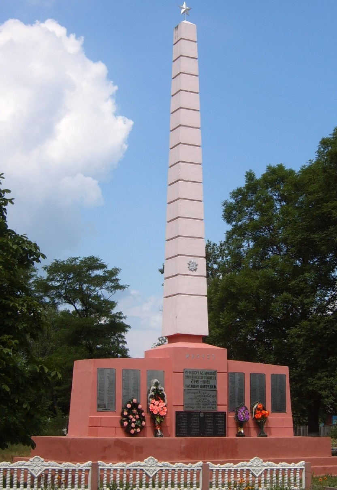

Обелиск
В центре деревни похоронены 394 воина и партизана, которые погибли
в годы Великой Отечественной войны на территории сельсовета. Среди
захороненных – воины 1323-го полка 415 стрелковой дивизии 61-й армии
1-го Белорусского фронта, которые погибли в боях при освобождении
деревни 10-12.7.1944г. Обелиск установлен в 1967г. На обелиске надпись :
«Из Рязани, из Казани, из Сибири, из Москвы – спят бойцы, свое сказали
и навек уже правы».
